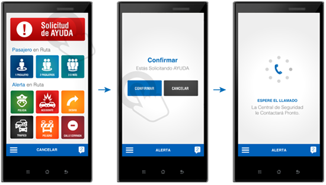

SOS TAXI
Servicio Exclusivo.
CONATACOCH
Sobre SOS TAXI
Es una Aplicación para Smartphone que permite enviar y recibir ayuda y orientación frente a una emergencia en la ruta, a través de un Llamado telefónico desde una Central de Emergencia y/o de contactos personales que constituirán su propia Red de Emergencia.
SOS TAXI permite invitar a contactos guardados en la agenda telefónica de su Smartphone a ser parte de su propia Red de Seguridad. El sistema fue diseñado exclusivamente para CONATACOCH, con alertas enfocadas específicamente en las necesidades de su trabajo cotidiano.
